This page collects machine learning resources, tools, and example systems designed to support research in audio content analysis in everyday environments, especially in fields such as acoustic scene classification and sound event detection.
What You'll Find Here:
-
Evaluation and Data Handling Tools: Standardized Python libraries such as sed_eval and dcase_util for evaluating system performance and managing audio datasets.
-
Visualization Tools: Interactive and video-based visualizations using
sed_visfor presenting system outputs and annotations, as well as dynamic data tables and visualizations withjs-datatable. -
Machine Learning Tutorials: Hands-on code examples from workshops and tutorials (ICASSP 2019 Tutorial about deep learning for acoustic scenes and events, Practical tools for sound classification and speech AI presented in AI Hub Audio and Speech Technology Workshop 2022).
-
Example Systems from Research: Implementations from the book Computational Analysis of Sound Scenes and Events demonstrating single-label and multi-label classification tasks as well as the sound event detection task.
-
DCASE Challenge Baselines (2016–2020): Reference systems for acoustic scene classification and sound event detection, implemented in Python and MATLAB.
A practical set of entry points into machine learning for audio analysis.
Research tools - Evaluation and Data Handling
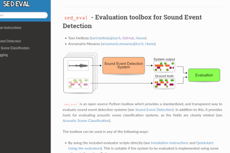
Evaluation toolbox for Sound Event Detection
sed_eval
An open-source Python toolbox that provides a standardized and transparent method for evaluating sound event detection systems (see Sound Event Detection). Additionally, it provides tools for evaluating acoustic scene classification systems, as the fields are closely related (see Acoustic Scene Classification).
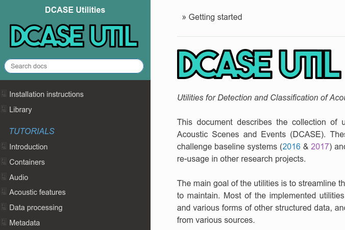
Utilities for Detection and Classification of Acoustic Scenes and Events
dcase_util
These utilities were initially created for the DCASE challenge baseline systems (2016 & 2017) and are bundled into a standalone library to allow their re-usage in other research projects. The primary goal of the utilities is to streamline the research code, making it more readable and easier to maintain. Most of the implemented utilities are related to audio datasets: handling metadata and various forms of structured data, and providing a standardized usage API for audio datasets from multiple sources.
Data and System Results Visualization
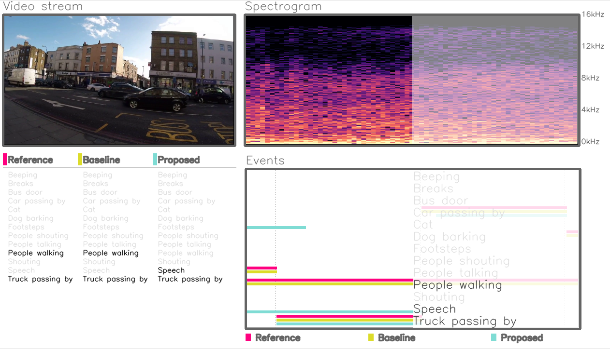
Visualization toolbox for Sound Event Detection
sed_vis
An open-source Python toolbox for visualizing annotations and system outputs of sound event detection systems. The toolbox features an event roll-style visualizer that displays annotations and/or system outputs alongside the audio waveform. Users can play the audio and follow sound events using an interactive indicator bar. In addition to the interactive visualizer, the toolbox includes a video generator for creating demonstration videos for sound event detection, audio tagging, and audio captioning tasks.
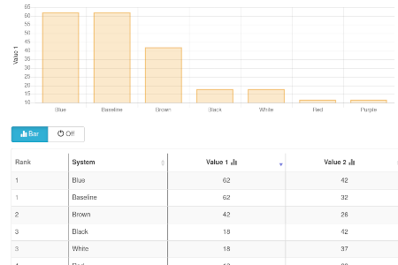
Dynamic HTML tables with data visualization
js-datatable
An open-source jQuery plugin for creating dynamic HTML tables with built-in data visualization capabilities. This plugin was originally developed to support academic data visualization, and specifically for presenting results from the DCASE2016 evaluation campaign. The plugin was designed to integrate seamlessly with the Pelican static site generator. The project later evolved into js-datatable, a standalone jQuery plugin that encapsulates the core functionality. For Pelican integration, refer to the companion project: pelican-datatable.
Machine Learning Tutorials
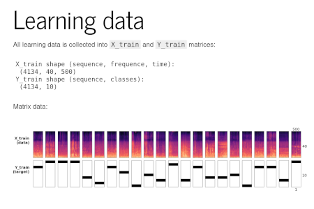
Audio Technologies Code Examples
Audio and Speech Technologies Workshop 2022
This repository contains code examples from the tutorial presented at the AI Hub Audio and Speech Technology Workshop 2022. The workshop was co-hosted by AI Hub Tampere and the MARVEL project to showcase practical tools and techniques in modern audio and speech processing. The tutorial introduced participants to key concepts and hands-on methods in sound classification, environmental audio AI, and speech AI.
Detection and Classification of Acoustic Scenes and Events Tutorial
ICASSP2019 Tutorial
This repository contains code examples from the ICASSP 2019 tutorial "Detection and Classification of Acoustic Scenes and Events", presented by Tuomas Virtanen, Annamaria Mesaros, and Toni Heittola. The tutorial highlights key methods for acoustic scene classification and sound event detection, with a focus on deep learning. It includes practical examples of convolutional neural networks (CNNs) and convolutional recurrent neural networks (CRNNs).
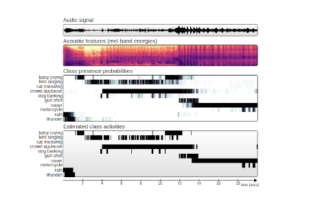
Example Systems for a Book
The Machine Learning Approach for Analysis of Sound Scenes and Events
Example Systems for Chapter 2: "The Machine Learning Approach for Analysis of Sound Scenes and Events" Toni Heittola, Emre Çakır, and Tuomas Virtanen In Computational Analysis of Sound Scenes and Events, edited by T. Virtanen, M. Plumbley, and D. Ellis, pp. 13–40, Springer, 2018. This repository provides example systems that demonstrate how to address key audio analysis tasks using machine learning techniques: 1) Single-label classification: An example system for classifying audio into mutually exclusive categories, 2) Multi-label classification: A system designed to handle overlapping sound events within a single audio segment, 3) Sound event detection: A system that identifies the presence and timing of specific sound events within an audio stream. These code examples aim to support the concepts presented in Chapter 2 of the book and provide practical starting points for researchers and developers in computational sound analysis.
Benchmarks for DCASE Challenge
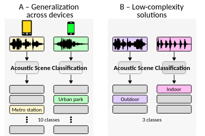
Acoustic Scene Classification Baseline
DCASE2020 Challenge Task 1
A simple entry-level state-of-the-art approach based on OpenL3 embeddings and log Mel-band energy features, and multilayer perceptron (MLP) and convolutional neural network (CNN) classifiers. The system is built on the Tensorflow framework, and it is easily extendable through YAML configurations and extending classes.
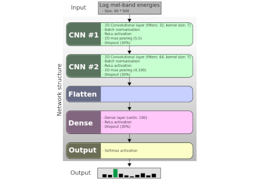
Acoustic Scene Classification Baseline
DCASE2019 Challenge Task 1
A simple entry-level state-of-the-art approach based on log Mel-band energy features and a convolutional neural network (CNN) classifier. The system is built on the Tensorflow framework, and it is easily extendable through YAML configurations and extending classes.
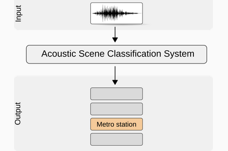
Acoustic Scene Classification Baseline
DCASE2018 Challenge Task 1
A simple entry-level state-of-the-art approach based on log Mel-band energy features and a convolutional neural network (CNN) classifier. The system is built on the Keras / Tensorflow framework, and it is easily extendable through YAML configurations and extending classes.
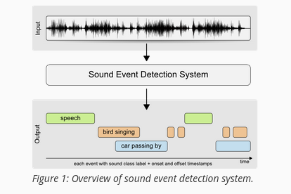
DCASE Baselines for ASC and SED
DCASE2017 Challenge Task 1-3
An entry-level system based on log Mel-band energy features and a multilayer perceptron (MLP) classifier. The system is built on the Keras / Theano framework.
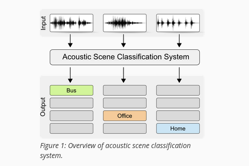
DCASE Baselines for ASC and SED (Python&Matlab)
DCASE2016 Challenge Task 1 & 3
A system based on MFCC features and a Gaussian Mixture Model (GMM) classifier. For ASC, a separate model is trained per scene class using maximum likelihood classification. For SED, each event class has a binary classifier. There are reference implementations in both Python and MATLAB.